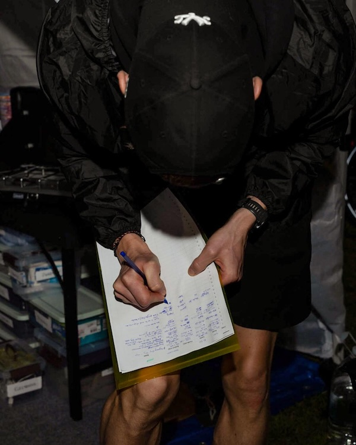

| Race | Sydney's Backyard Ultra 2026 | ||
|---|---|---|---|
| Date | September 19, 2026 | First loop | 8 am |
| Place | St Ives Showground, Sydney, Australia | ||
| Loop | 6.7056 km (4.167 miles) | Timing | Ticker Timing Sports |
| Runners | 631 | Loops run | 8,286 |
Last man standing · Winner
Justin Makhlouf
66 loops 442.6 km
Last woman standing
Kim Lueck
37 loops 248.1 km

Sydney's Backyard Ultra 2026 results
| Pl. | Runner | Loops | Distance | Time on course |
|---|---|---|---|---|
| 1 | Justin Makhlouf | 66 | 442.6 km | 54:13:29 |
| 2 | Lee Warren | 65 | 435.9 km | 54:36:18 |
| 3 | Rhys Comley | 59 | 395.6 km | 46:33:39 |
| 4 | Josh Graham | 51 | 342.0 km | 44:13:34 |
| 5 | Chris Gulumian | 40 | 268.2 km | 31:01:45 |
| 6 | Bronte Baker | 39 | 261.5 km | 31:02:34 |
| 7 | Kim Lueck | 37 | 248.1 km | 29:32:46 |
| 8 | Mattéo Herbelot | 37 | 248.1 km | 31:12:57 |
| 9 | Perry King | 36 | 241.4 km | 28:27:58 |
| 10 | Clare Palmer | 36 | 241.4 km | 25:53:55 |
How the race ended
On loop 63, Makhlouf ran 45:25, his fastest loop since loop 21. Warren got slower on every loop after that.
| Loop | Makhlouf | Warren |
|---|---|---|
| 57 | 49:51 | 50:45 |
| 58 | 53:32 | 53:34 |
| 59 | 53:00 | 53:00 |
| 60 | 49:50 | 49:49 |
| 61 | 51:54 | 51:54 |
| 62 | 53:21 | 53:20 |
| 63 | 45:25 | 52:33 |
| 64 | 51:29 | 54:59 |
| 65 | 49:10 | 55:21 |
| 66 | 47:21 | Did not finish |
Loop 63 split them.
- Justin Makhlouf: 66 loops, 442.6 km. 11 hours 47 minutes of rest banked.
- Lee Warren: 65 loops, 435.9 km. 10 hours 24 minutes of rest banked.
Rest banked is the time left over each hour after the loop, added up across the race.
From loop 60, only Makhlouf and Warren were left. On loops 60 to 62 they finished within two seconds of each other.
Loop 63 split them. Makhlouf ran 45:25. Warren ran 52:33.
Warren ran 54:59 on loop 64. Then 55:21 on loop 65, his slowest loop of the race. That left him 4 minutes 39 seconds of rest.
He started loop 66 and did not finish it in time. Makhlouf ran it alone, in 47:21, and won.
When runners dropped out
348 runners were gone before the first night.
Runners who stopped, loop by loop
A runner who completed 16 loops sits in the L17 bar, the loop they did not complete. Shaded bars are night loops.
- Biggest single exit: 98 runners stopped after loop 15, 100.6 km.
- Half the field: more than half the runners stopped at 12 loops or fewer.
- Marathon: 550 runners reached it at loop 7, 46.9 km. 60 of them stopped right there (11%).
- 50 miles: 335 runners reached it at loop 12, 80.5 km. 52 of them stopped right there (16%).
- 100 km: 258 runners reached it at loop 15, 100.6 km. 98 of them stopped right there (38%).
- 100 miles: 64 runners reached it at loop 24, 160.9 km. 17 of them stopped right there (27%).
Four loops took far more runners than the loops next to them. Each one lines up with a distance every runner already knows: a marathon, 50 miles, 100 km and 100 miles.
100 miles took 17. That may not sound like a lot. But only 64 runners got that far, so more than one in four stopped right there.
Women and men
The women's middle loop time was slower than the men's on every loop from 2 to 18.
Of the 631 starters, 107 were women and 522 were men.
Last woman standing
Kim Lueck
37 loops · 248.1 km
Only 6 runners in the whole field went further.
The next woman was Clare Palmer, one loop behind.
Loop by loop
Each point on this chart is one loop. It shows the middle time of everyone who finished that loop. Half of them ran it faster. Half ran it slower. That middle time is called the median.
We only put women next to men on the same loop. Same heat, same rain, same dark.
A line stops when fewer than 10 runners are left on it. After that, one runner can swing the number too much. You can still follow each runner in lap times for every runner.
Loop 19 flipped it.
On loop 1, the women's middle time was 48:59. The men's was 48:58. One second apart.
From loop 2 to loop 18, the women's middle time was slower on every loop. On 12 of those 17 loops, it was slower by a minute or more.
Loop 19 flipped it. Eleven women finished that loop. Their middle time was 19 seconds faster than the men's.
Want to see when each group stopped? Use the Women and Men switch on the dropouts chart.
The field had 2 agender runners. They are left out of both groups, and show under All only.
Day vs night loops
Runners stopped at about the same rate by day and by night.
- Before the first night: 348 runners stopped.
- The first night (9 pm Saturday to 5 am Sunday): 217 stopped.
- Through the first night: 66 runners finished its last loop.
- Whole race: 408 stopped on a day loop, 222 on a night loop.
- Hours: the race ran 43 day loops and 23 night loops.
- Per hour: about 9.5 runners stopped each day hour, 9.7 each night hour.
A night loop is one that starts between 9 pm and 5 am.
The first day took out more runners than the first night: 348 against 217.
Across the whole race, day loops took almost twice as many runners as night loops. But there were almost twice as many day hours too. Spread the stops across the hours, and day and night come out close to even.
Lap times for every runner
Find any runner and see every loop they ran.
| Runner | 1 | 2 | 3 | 4 | 5 | 6 | 7 | 8 | 9 | 10 | 11 | 12 | 13 | 14 | 15 | 16 | 17 | 18 | 19 | 20 | 21 | 22 | 23 | 24 | 25 | 26 | 27 | 28 | 29 | 30 | 31 | 32 | 33 | 34 | 35 | 36 | 37 | 38 | 39 | 40 | 41 | 42 | 43 | 44 | 45 | 46 | 47 | 48 | 49 | 50 | 51 | 52 | 53 | 54 | 55 | 56 | 57 | 58 | 59 | 60 | 61 | 62 | 63 | 64 | 65 | 66 |
|---|---|---|---|---|---|---|---|---|---|---|---|---|---|---|---|---|---|---|---|---|---|---|---|---|---|---|---|---|---|---|---|---|---|---|---|---|---|---|---|---|---|---|---|---|---|---|---|---|---|---|---|---|---|---|---|---|---|---|---|---|---|---|---|---|---|---|
| 1 Makhlouf66 | 48:15 | 50:28 | 50:02 | 49:47 | 50:12 | 48:46 | 49:48 | 49:35 | 49:52 | 49:51 | 50:09 | 48:40 | 49:46 | 50:14 | 47:19 | 47:40 | 50:10 | 47:07 | 46:14 | 48:25 | 45:06 | 47:01 | 49:53 | 49:34 | 49:34 | 48:02 | 49:23 | 49:56 | 49:48 | 49:03 | 48:56 | 49:00 | 49:45 | 50:08 | 49:39 | 48:11 | 48:01 | 47:10 | 50:36 | 52:32 | 48:43 | 47:01 | 51:10 | 51:11 | 50:26 | 50:40 | 49:20 | 47:30 | 47:32 | 48:44 | 48:54 | 50:01 | 49:00 | 46:12 | 49:02 | 49:01 | 49:51 | 53:32 | 53:00 | 49:50 | 51:54 | 53:21 | 45:25 | 51:29 | 49:10 | 47:21 |
| 2 Warren65 | 47:22 | 47:16 | 48:58 | 47:29 | 46:42 | 48:28 | 49:16 | 50:49 | 50:21 | 47:31 | 51:15 | 49:37 | 49:42 | 48:43 | 51:27 | 49:35 | 48:06 | 49:11 | 49:48 | 54:58 | 50:06 | 48:15 | 47:54 | 47:57 | 48:01 | 49:02 | 48:54 | 49:36 | 50:15 | 52:03 | 50:28 | 52:48 | 51:24 | 49:21 | 52:58 | 50:17 | 50:53 | 50:13 | 50:33 | 50:27 | 49:15 | 49:19 | 50:13 | 51:31 | 50:25 | 50:37 | 49:58 | 49:13 | 50:57 | 53:04 | 52:06 | 50:48 | 55:01 | 50:40 | 49:03 | 50:23 | 50:45 | 53:34 | 53:00 | 49:49 | 51:54 | 53:20 | 52:33 | 54:59 | 55:21 | |
| 3 Comley59 | 51:05 | 48:23 | 46:31 | 46:16 | 46:52 | 46:08 | 45:40 | 46:29 | 45:10 | 46:06 | 45:07 | 46:10 | 43:50 | 46:35 | 44:48 | 43:59 | 46:35 | 46:09 | 46:16 | 48:42 | 45:25 | 48:06 | 43:59 | 44:38 | 45:09 | 44:42 | 49:00 | 46:44 | 46:56 | 50:50 | 47:26 | 48:05 | 46:04 | 45:13 | 48:04 | 47:44 | 47:08 | 49:36 | 45:46 | 48:23 | 48:02 | 47:32 | 48:33 | 48:21 | 50:24 | 48:39 | 46:30 | 46:08 | 47:12 | 48:38 | 49:45 | 48:47 | 48:10 | 46:58 | 49:02 | 48:15 | 49:50 | 53:34 | 53:03 | |||||||
| 4 Graham51 | 56:14 | 54:00 | 54:37 | 53:38 | 52:33 | 52:55 | 54:45 | 53:06 | 52:15 | 53:56 | 52:42 | 54:14 | 50:53 | 52:33 | 53:39 | 51:33 | 51:10 | 46:30 | 51:09 | 52:56 | 50:43 | 49:39 | 51:00 | 52:24 | 50:48 | 50:53 | 53:16 | 52:56 | 51:58 | 48:42 | 52:07 | 52:02 | 52:22 | 49:14 | 50:34 | 50:13 | 50:43 | 50:12 | 50:32 | 49:09 | 53:52 | 52:39 | 50:42 | 51:15 | 50:23 | 51:08 | 50:43 | 53:42 | 53:34 | 54:19 | 56:09 | |||||||||||||||
| 5 Gulumian40 | 49:22 | 50:34 | 48:27 | 46:37 | 46:55 | 45:38 | 48:11 | 51:20 | 46:06 | 45:10 | 50:13 | 51:40 | 49:41 | 45:08 | 43:04 | 42:40 | 42:37 | 41:52 | 42:48 | 42:51 | 44:57 | 43:19 | 40:16 | 40:24 | 45:42 | 44:02 | 45:09 | 45:17 | 42:53 | 43:07 | 47:44 | 48:00 | 46:21 | 44:50 | 48:02 | 48:54 | 49:35 | 49:16 | 56:55 | 55:49 | ||||||||||||||||||||||||||
| 6 Baker39 | 49:51 | 50:21 | 50:05 | 48:58 | 48:34 | 48:47 | 49:38 | 49:26 | 49:28 | 48:40 | 46:32 | 48:47 | 48:17 | 44:11 | 43:38 | 48:47 | 44:11 | 43:08 | 50:03 | 44:17 | 44:44 | 50:03 | 43:57 | 46:36 | 48:10 | 47:44 | 47:01 | 45:50 | 46:56 | 45:40 | 50:43 | 46:10 | 46:15 | 45:51 | 48:41 | 53:29 | 46:05 | 47:49 | 54:51 | |||||||||||||||||||||||||||
| 7 Lueck37 | 50:11 | 49:36 | 47:48 | 48:34 | 47:16 | 46:48 | 47:07 | 47:36 | 48:22 | 46:00 | 48:17 | 48:45 | 49:34 | 49:42 | 46:23 | 47:59 | 49:27 | 47:43 | 48:55 | 47:04 | 48:24 | 46:52 | 45:29 | 45:49 | 45:14 | 45:46 | 44:34 | 47:37 | 49:05 | 47:39 | 47:49 | 49:24 | 48:54 | 49:02 | 49:01 | 50:01 | 48:39 | |||||||||||||||||||||||||||||
| 8 Herbelot37 | 52:01 | 51:01 | 50:18 | 50:33 | 50:25 | 50:51 | 50:58 | 52:06 | 49:41 | 51:43 | 51:16 | 50:21 | 50:46 | 46:32 | 48:47 | 49:50 | 50:29 | 49:04 | 52:36 | 51:32 | 48:18 | 50:19 | 47:53 | 49:15 | 50:02 | 49:19 | 49:51 | 52:37 | 47:23 | 52:06 | 49:25 | 47:39 | 51:45 | 49:40 | 53:56 | 55:00 | 57:20 | |||||||||||||||||||||||||||||
| 9 King36 | 45:38 | 47:08 | 48:40 | 47:18 | 45:24 | 44:39 | 45:34 | 48:37 | 47:47 | 49:27 | 48:48 | 49:16 | 51:18 | 48:18 | 51:32 | 48:33 | 51:46 | 51:16 | 48:03 | 49:34 | 51:33 | 49:39 | 47:13 | 41:56 | 45:48 | 46:13 | 46:22 | 44:30 | 41:37 | 41:15 | 45:24 | 44:02 | 49:26 | 46:30 | 48:23 | 49:12 | ||||||||||||||||||||||||||||||
| 10 Palmer36 | 39:30 | 39:50 | 41:42 | 41:37 | 41:28 | 41:47 | 41:48 | 41:05 | 40:35 | 40:14 | 40:42 | 40:50 | 41:24 | 41:18 | 41:44 | 39:56 | 40:50 | 42:10 | 42:32 | 41:27 | 42:29 | 41:39 | 40:46 | 40:42 | 41:18 | 46:50 | 42:19 | 44:12 | 49:39 | 47:13 | 46:14 | 46:46 | 47:52 | 45:49 | 52:31 | 54:54 | ||||||||||||||||||||||||||||||
| 11 Dann36 | 47:06 | 45:09 | 45:56 | 44:39 | 43:13 | 43:38 | 43:53 | 48:36 | 39:11 | 47:47 | 50:05 | 49:04 | 48:27 | 48:37 | 48:04 | 48:43 | 47:06 | 44:31 | 47:31 | 51:00 | 50:39 | 47:25 | 46:34 | 39:57 | 45:11 | 46:17 | 45:12 | 42:20 | 43:40 | 45:51 | 49:10 | 50:21 | 52:58 | 50:29 | 54:53 | 57:32 | ||||||||||||||||||||||||||||||
| 12 Mulhern33 | 48:48 | 48:39 | 47:27 | 46:02 | 47:15 | 47:31 | 46:21 | 48:59 | 47:07 | 49:21 | 48:40 | 51:12 | 49:48 | 49:26 | 48:56 | 48:35 | 51:20 | 48:58 | 49:50 | 51:28 | 51:10 | 50:47 | 47:34 | 45:23 | 43:51 | 48:02 | 42:56 | 47:54 | 45:00 | 46:43 | 46:25 | 50:10 | 42:04 |
Circled: each runner's fastest loop. Shaded columns: night loops.
- Middle runner: averaged 49:32 a loop. Half the field averaged faster, half slower.
How a backyard ultra works
Every runner starts a 6.7 km loop at the top of each hour. Finish it inside the hour and the time left over is your rest. Miss the next start and your race is over. The last runner to finish a loop alone wins.